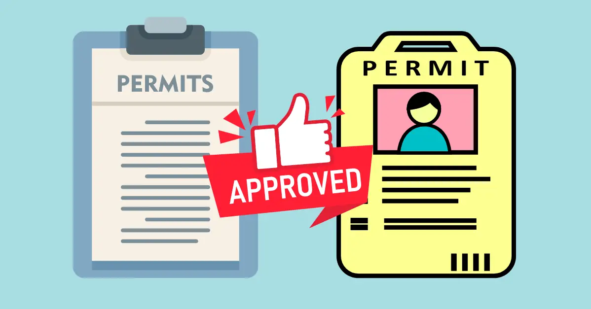
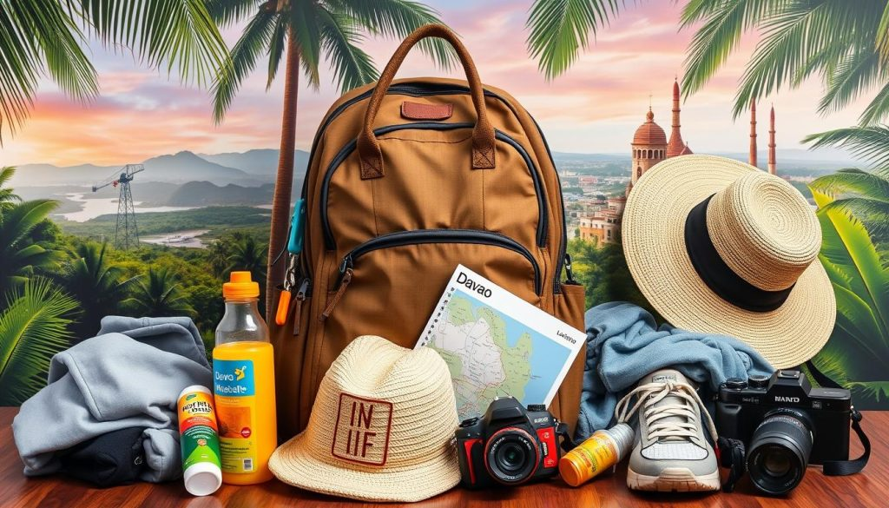

Stay hydrated, use sun protection, and always follow your tour guide's instructions.
Bring enough cash in smaller denominations, as ATMs are scarce in mountain areas.
Always ask for permission before taking photos of locals or entering sacred grounds.
We want your trip to Davao del Sur to be as seamless and enjoyable as possible. Being prepared is the key to a great adventure, especially when transitioning between the bustling cities and the remote highlands. If you are planning to hike Mt. Apo, physical preparation and securing local government permits months in advance are non-negotiable. For general travel, pack versatile clothing—it gets incredibly hot on the beaches but surprisingly freezing at night in Kapatagan. Lastly, learning a few basic phrases in Bisaya (Cebuano) will go a long way with the friendly locals!

Hiking and camping in protected areas require official permits. Do not rely on walk-ins.

Bring dry-bags for waterfall treks, thick jackets for the mountains, and comfortable trail shoes.
While hotels accept cards, you will need cash for tricycles, local markets, and eco-park entrance fees.
Fly to Francisco Bangoy International Airport in Davao City, then take a bus south.
November to May is the dry season — ideal for outdoor activities and beach trips.
Davao del Sur offers affordable accommodations, food, and transport options.